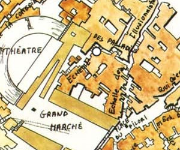
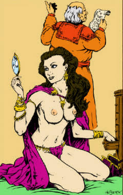

Guilde des courtisanes
Sous la couverture la plus anodine qui soit, celle de la respectable Académie royale du bel art, se cache une des institutions les plus influentes de Laelith.
Histoire
L'Académie royale du bel art fut inaugurée sous le règne de Nadayat le Précieux, par le Roi-Dieu en personne. Il lui accorda le droit de s'établir sur la terrasse de la Prospérité, échelle des Paladins, à proximité du théâtre. Nadayat était amateur d'art et de belles choses d'une manière générale. À ses titres officiels et ses rôles officieux, il ajouta celui de mécène en finançant, entre autres, la construction des bâtiments de l'Académie, ainsi qu'en lui accordant un revenu suffisant pour en faire débuter les activités. C'est pourquoi le vaste hall d'entrée de l'Académie s'orne d'une gigantesque et superbe statue en pied de Nadayat, dans l'une de ses attitudes favorites, bien campé sur ses deux pieds, les bras ouverts face à la foule et le sourire aux lèvres.
Telle qu'officiellement établie lors de sa fondation, la mission de l'Académie royale est de promouvoir et protéger toutes les formes d'art connues, existantes et à venir, de procurer à de jeunes gens talentueux les possibilités de développer leur potentiel artistique dans un environnement de qualité, et d'en assurer la diffusion auprès du public. En clair, l'Académie du bel art est à la fois un musée d'arts et une école où sont enseignées toutes les disciplines artistiques. La renommée de l'Académie est telle aujourd'hui en matière de qualité artistique que nombre de familles nobles ou riches considèrent qu'il est de bon ton pour leurs enfants, quelle que soit la carrière à laquelle ils se destinent, d'y prendre quelques cours. Ouverte à tous, l'Académie offre depuis toujours deux particularités :
- Le prix des cours est calculé après enquête sur les revenus ou la notoriété de la famille des étudiants (l'inscription coûte beaucoup plus cher à un fils de riche marchand qu'à une jeune fille de milieu modeste), et un certain snobisme veut que l'on paye le plus cher possible.
- Seules les jeunes filles, selon la volonté du fondateur, y sont acceptées comme pensionnaires. L'Académie accorde même à certains éléments de valeur, exclusivement féminins et démunis, une bourse leur permettant de suivre les cours.
De plus, même si les cours sont assurés par les plus grands artistes laelithiens ou étrangers (hommes et femmes, sans distinction), l'ensemble du personnel assurant l'administration de l'Académie est composé de femmes. La conservatrice du musée et la directrice de l'Académie président aux destinées de la fondation Nadayat.
Couverture
Hormis les personnalités influentes de la ville sainte (Roi-Dieu, grands prêtres, maîtres de certaines guildes...), personne ne sait que derrière l'Académie royale du bel art se cache la guilde des courtisanes. De tout temps et dans toutes les civilisations, on a toujours vu des femmes (intelligentes, belles, ambitieuses) conseiller leurs maris ou amants dans leurs décisions, en les poussant à faire certains choix grâce à des méthodes... qui leur sont personnelles. À Laelith, c'est la guilde des courtisanes qui veille à exploiter au mieux cet attrait naturel des hommes pour des jeunes femmes pleines de charmes et de bon sens.
Le but réel de la guilde est très simple et s'exprime en un seul mot : le Pouvoir, c'est-à-dire maîtriser totalement les destinées de la ville sainte. La tache de la guilde est de placer des courtisanes (en tant que concubine, femme légitime ou simplement conseillère écoutée) aux côtés de tous les hommes importants et qu'elles influent sur leurs décisions dans le sens qui intéresse la guilde. Il est bien entendu que l'ambition des courtisanes reste dans le cadre de la sûreté de la ville (ce n'est en aucun cas une organisation subversive). Plus Laelith est riche et puissante, plus la guilde le sera elle-même !
En réalité, au cours des siècles, les courtisanes ont été plus ou moins bien implantées. Certaines époques ont vu l'ensemble des compagnes des maîtres de guildes (la Haute Guilde en particulier) et des grands prêtres (même le Roi-Dieu, Nadayat en est un exemple) être issues de la guilde. D'autres périodes les ont vues végéter et survivre péniblement. Néanmoins, l'Académie a toujours subsisté et son rôle réel est toujours resté ignoré du grand public, malgré les rumeurs qui ne manquent pas de se répandre épisodiquement.
Fonctionnement
La guilde recrute deux types de femmes, destinés à des fonctions différentes :
- Les gestionnaires. Pas forcement séduisantes, bien que cela ne soit pas incompatible, ce sont elles qui font fonctionner la maison (administration, finance, politique, relations publiques).
- Les missionnaires. Très belles, cultivées, racées, c'est l'armée de la guilde.
Ces femmes peuvent venir de deux origines distinctes. Soit directement du milieu artistique et avoir, en plus d'un don pour la danse, la peinture ou toute autre discipline, des ambitions compatibles avec celles de la guilde. Des professeurs particuliers leur enseigneront dans ce cas la pratique de l'art de faire les poches d'autrui ou de crocheter une serrure réticente (car il faut parfois accéder par ses propres moyens à des documents ou des renseignements importants). Soit indirectement d'une guilde de voleurs de la ville, après avoir été « découvertes » par un chef de bande et orientées vers les courtisanes. Il s'agit de jeunes filles belles et ambitieuses, la plupart du temps intelligentes. À l'Académie, si elles acceptent d'y rentrer, leur éducation sera complétée, elles apprendront à se tenir en société, ainsi que la pratique d'une discipline artistique. Toutes étudieront des « méthodes de travail » propres à cette profession, telles que le ventriloquisme ou comment détourner l'attention de quelqu'un.
Dans tous les cas, ce passage par les cours de l'Académie permet aux apprenties de côtoyer des fils de familles riches ou nobles et de sceller un certain nombre de contacts qui pourront se révéler fort utiles par la suite. Même les jeunes filles prometteuses n'accèdent pas immédiatement à la connaissance de la guilde. Lorsqu'elles en sont jugées aptes, lorsque l'on est sûr d'elles, elles apprennent l'existence et la raison d'être de la guilde. Jusqu'alors, même si des missions leur avaient été confiées, les futures courtisanes en avaient ignoré la raison exacte. À partir de ce moment, des connaissances spécifiques pourront leur être enseignées (hypnose ou soins des maladies « spéciales » par exemple).
La conservatrice du musée et la directrice de l'Académie sont choisies indifféremment parmi les gestionnaires ou les missionnaires. Chacune d'elles désigne celle qui sera la plus apte à lui succéder, parmi les courtisanes désireuses d'occuper ce poste. La Grande Courtisane est responsable des activités propres à la guilde. Les deux précédentes la conseillent et appliquent ses décisions. La Grande Courtisane loge tout près de là, au numéro 40 de la même rue, dans un superbe hôtel particulier.
Revenus
La guilde des courtisanes tire l'essentiel de ses revenus des activités de ses membres. Il n'est pas rare de voir certains temples ou institutions de Laelith faire des dons substantiels à l'Académie, ainsi que de riches marchands... D'habiles courtisanes, bien placées, y veillent. Cette source de revenus est importante, mais la guilde doit pouvoir subvenir directement à ses besoins (par exemple au cours des périodes peu fastes pour elle). Voici comment :
- Les étudiants de l'Académie paient tous leurs cours (sauf les boursiers, bien sur)
- Le musée organise des ventes aux enchères d'oeuvres célèbres
- Certaines courtisanes, principalement lorsqu'elles sont âgées, travaillent au Lazaret comme gynécologues. Ayant les compétences indispensables pour exercer, elles sont à même d'éviter aux courtisanes certains problèmes de santé, de soigner les maladies dites sexuellement transmissibles ou d'écourter une grossesse non désirée. Ces spécialistes sont, moyennant honnête rétribution, au service du public. Elles sont installées dans le pavillon du Poisson d'Argent, suite à des accords passés avec le grand prêtre.
Les courtisanes
La courtisane est par nature individualiste, préférant travailler seule et acceptant difficilement d'être dirigée. Pourtant elle sait reconnaître où est son intérêt. De ce fait, et à cause des innombrables services et facilités que l'organisation peut leur accorder, les courtisanes laelithiennes sont d'une loyauté totale envers leur guilde. Mais cela n'empêche pas qu'elles s'estiment perpétuellement en compétition avec les autres courtisanes (en fait, deux courtisanes sur une même « affaire » ne coopéreront pas, sauf si on leur en donne l'ordre).
Les courtisanes confirmées peuvent se reconnaître entre elles grâce à une tresse à quatre brins dissimulée dans leur coiffure. Non identifiable au premier coup d'oeil pour qui ne la cherche pas, cette tresse est le signe d'appartenance le plus discret et le plus efficace qui soit.
Par blueace